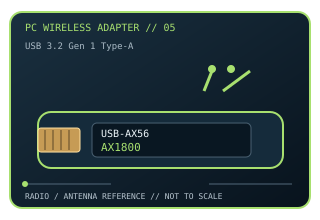

[ MODEL-SPECIFIC PC WI-FI HARDWARE ]
ASUS USB-AX56 AX1800 Wi-Fi 6 USB Adapter
Dual-band Wi-Fi 6 USB 3.2 Gen 1 adapter with two external antennas and desktop extension cradle. This record documents the named model and its labeled revision scope; it is not a claim that similarly named variants share identical drivers or radio limits.

IDENTIFICATION: Match the full product name, model label and hardware revision with its manufacturer page before choosing a driver. Regional channel and OS support can vary.
Dedicated wireless specifications
| Cataloged product | ASUS USB-AX56 AX1800 Wi-Fi 6 USB Adapter |
|---|---|
| Wi-Fi generation / standards | Wi-Fi 6 (802.11ax), with legacy 802.11a/b/g/n/ac compatibility. |
| Radio bands, channels & width | 2.4 GHz and 5 GHz. Up to 40 MHz channels at 2.4 GHz and 80 MHz at 5 GHz; typical U.S. channels 1–11 and 36–165 respectively, subject to regulatory and DFS controls. |
| Spatial streams / nominal link rates | 2×2 MIMO; up to 574 Mb/s at 2.4 GHz and 1,201 Mb/s at 5 GHz (AX1800 nominal PHY class). |
| Host interface | USB 3.2 Gen 1 Type-A; adapter can be attached directly or positioned using its included USB extension cradle. |
| Antenna arrangement | Two external antennas; adjustable orientation and included cradle aid placement away from the PC chassis. |
| Operating-system compatibility | ASUS download page lists Windows 10/11 support. ASUS marks this model end-of-life, with no further driver, firmware, utility or manual updates; confirm the legacy driver works with the intended build. |
| Bluetooth | No Bluetooth function is specified for this WLAN adapter. |
| Regulatory channel note | Dual-band only. Channel selection is region/driver-controlled; DFS-limited 5 GHz channels may not be exposed in every country. |
Model-specific installation notes
The AX1800 class is a band-summed PHY label. ASUS has ended updates for the model, so preserve its driver package and verify compatibility before relying on it for a new OS installation.
2 external antennas are shown in this model’s source documentation. Install only with the correct host connector and driver package; antenna placement, local regulation and access-point capabilities affect operation.
Manufacturer sources
- ASUS USB-AX56 product specificationsOfficial manufacturer source for product specifications, revision-specific software, or compatibility requirements.
- ASUS USB-AX56 driver archive and end-of-life noticeOfficial manufacturer source for product specifications, revision-specific software, or compatibility requirements.
- ASUS USB-AX56 technical specificationsASUS model-specific radio, interface and antenna specifications.
Source pages may describe a hardware family or provide revision-selected downloads. Manufacturer regional restrictions and current OS support take precedence over generic interface fit.